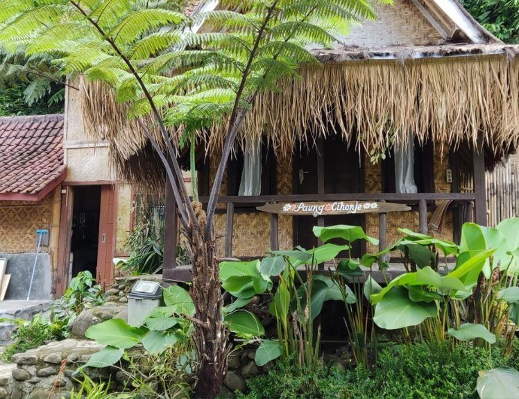
Saung 01 · 2 orang
Cihonje
Kecombrang, bunga rempah
Kapasitas 2 orang, maks 1 extra bed
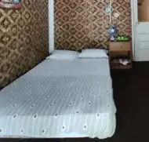
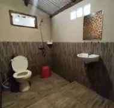
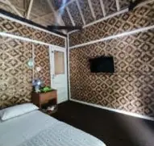
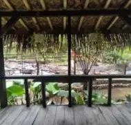
- Weekday · Rp
- 300 rb
- Weekend · Rp
- 350 rb
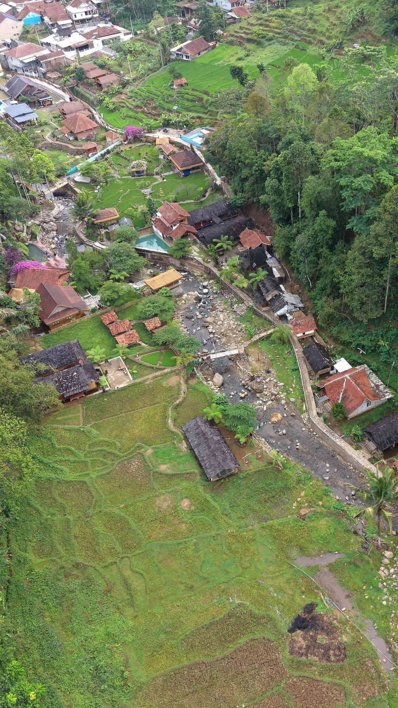
Puteri River Inn
Ecowisata di Sumedang, dengan villa kayu di pinggir sungai dan restoran Sunda untuk keluarga.
Air sungai yang dangkal untuk bermain air, dan ramah anak.
Villa kayu serasa vibe jaman dulu, dengan suara air sungai dan suara alam yang menemani.
Menu Sunda dan liwet, makannya lesehan di saung pinggir sawah.
Kolam renang yang dangkal dan ramah anak kecil. Sesudah main air di sungai, si kecil bisa lanjut bermain air di kolam renang.
Sembilan saung
Harga weekday lebih murah dari weekend. Pilih saungnya dan segera booking lewat WhatsApp official Puteri River Inn.
Semua saung ada TV dan water heater. Extra bed Rp75.000, jumlah maksimalnya beda tiap saung. Check-in 14.00, check-out 12.00.

Saung 01 · 2 orang
Kecombrang, bunga rempah
Kapasitas 2 orang, maks 1 extra bed




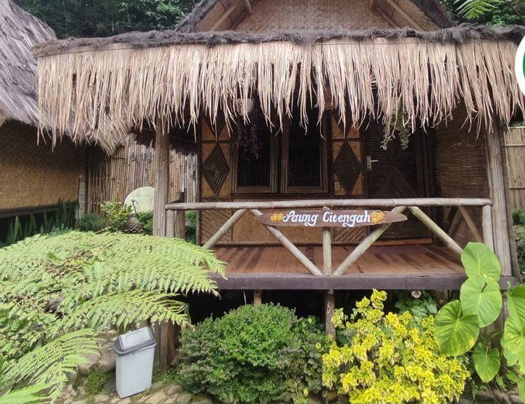
Saung 02 · 2 orang
Batu di tengah aliran sungai
Kapasitas 2 orang, maks 1 extra bed
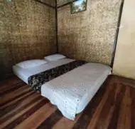
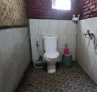
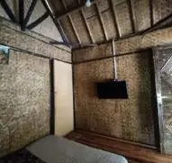
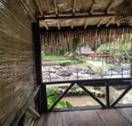
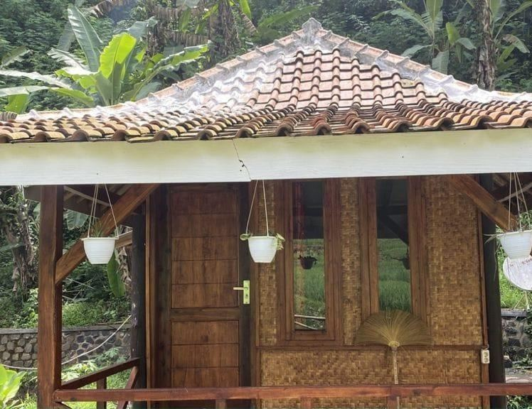
Saung 03 · 2 orang
Bunga soka bergerombol
Kapasitas 2 orang, maks 1 extra bed
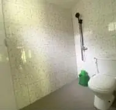
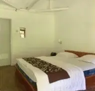
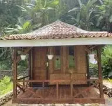
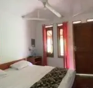
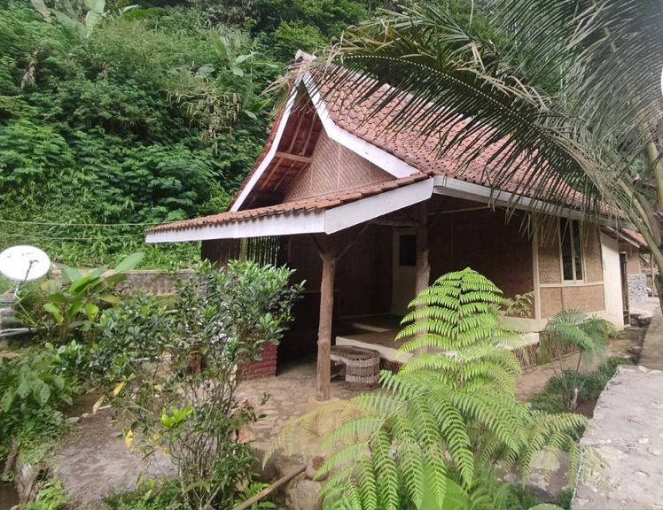
Saung 04 · 4 orang
Ibu, Sunan Ambu di kahyangan
Kapasitas 4 orang, maks 2 extra bed
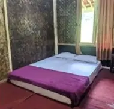
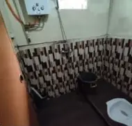
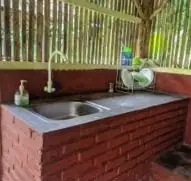
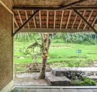
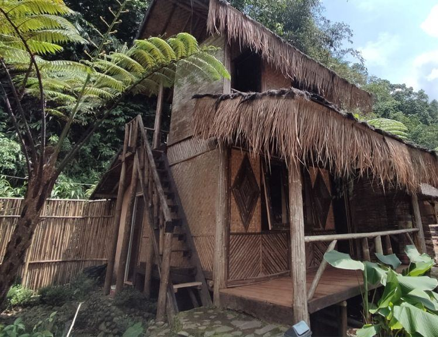
Saung 05 · 4 orang
Rambutan gunung
Kapasitas 4 orang, maks 1 extra bed
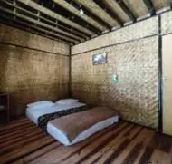
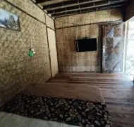
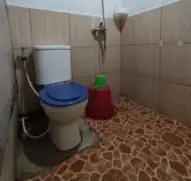
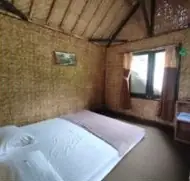
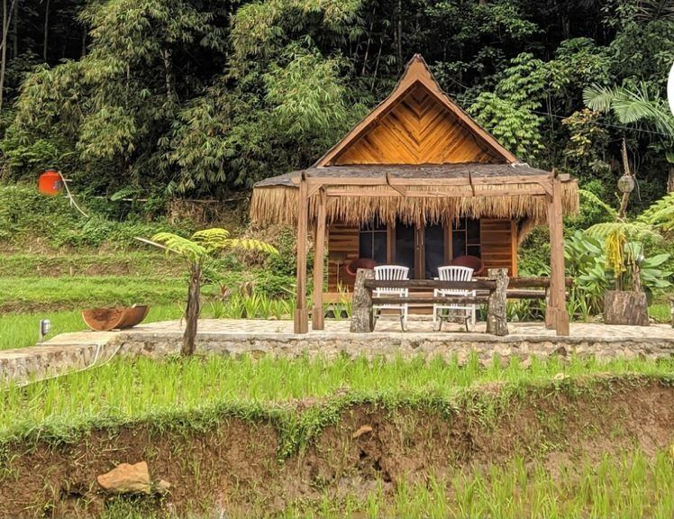
Saung 06 · 4 orang
Ibu, asal, mata air
Kapasitas 4 orang, maks 2 extra bed
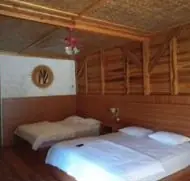
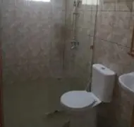
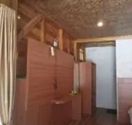
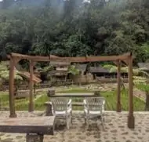
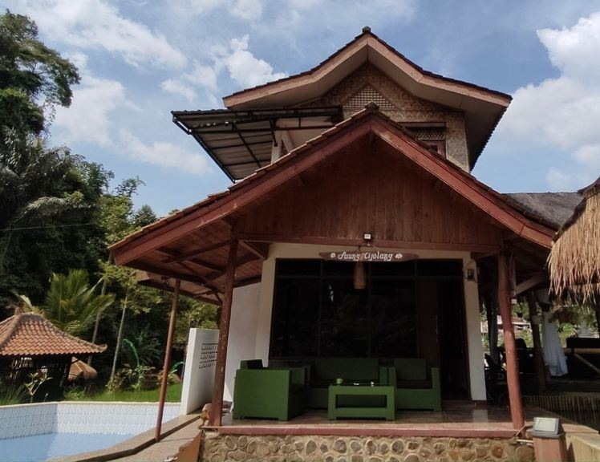
Saung 07 · 6 orang
Palung dari batang kayu
Kapasitas 6 orang, maks 4 extra bed
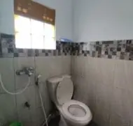
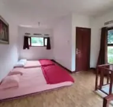
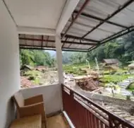
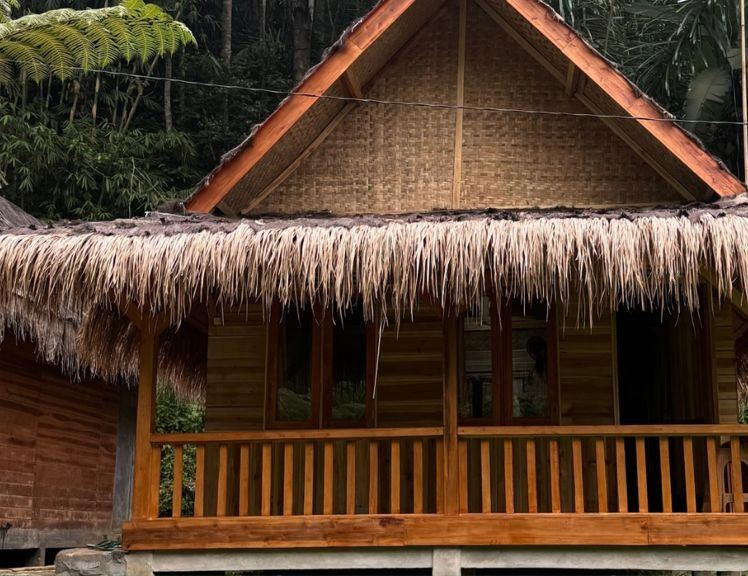
Saung 08 · 6 orang
Tempayan berlilit tali
Kapasitas 6 orang, maks 4 extra bed
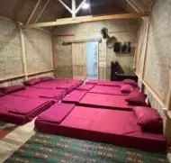
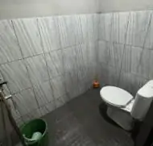
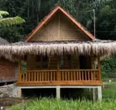
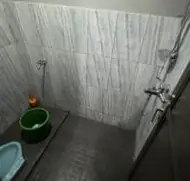
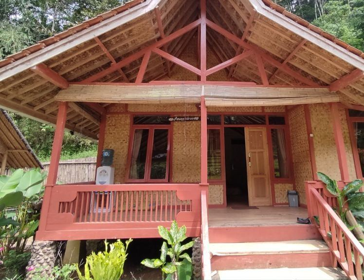
Saung 09 · 10 orang
Saung terbesar
Kapasitas 10 orang, maks 5 extra bed
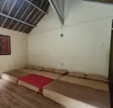
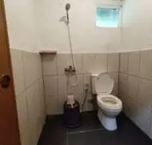
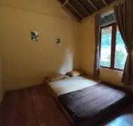
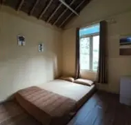
Buka 08.00–16.00
Area wisata buka 08.00–16.00, tiket Rp5.000 weekday dan Rp10.000 weekend. Datang siang, main di sungai, makan liwet di saung.
Tanya via WhatsApp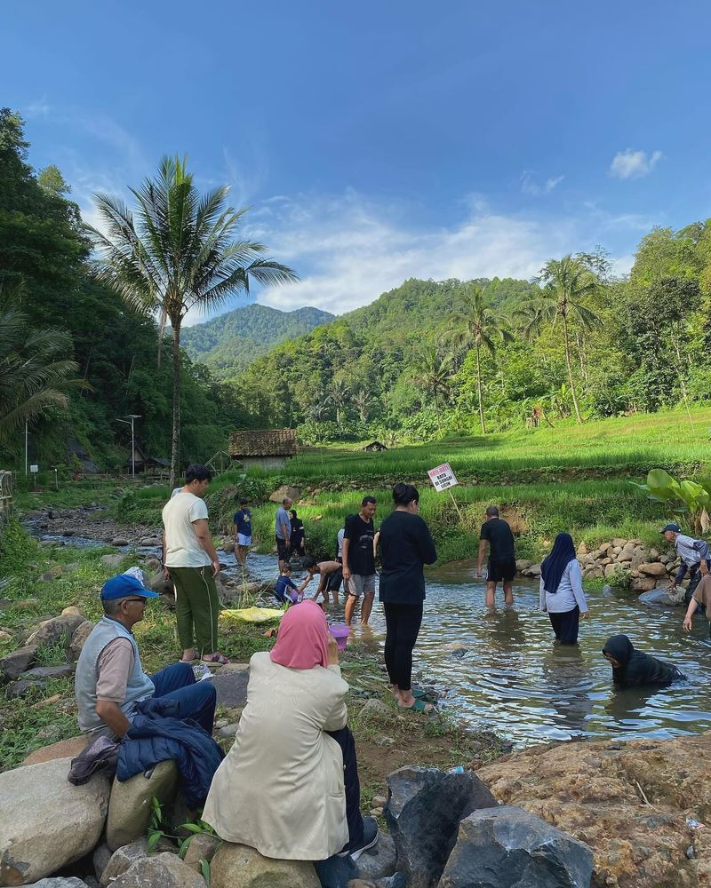
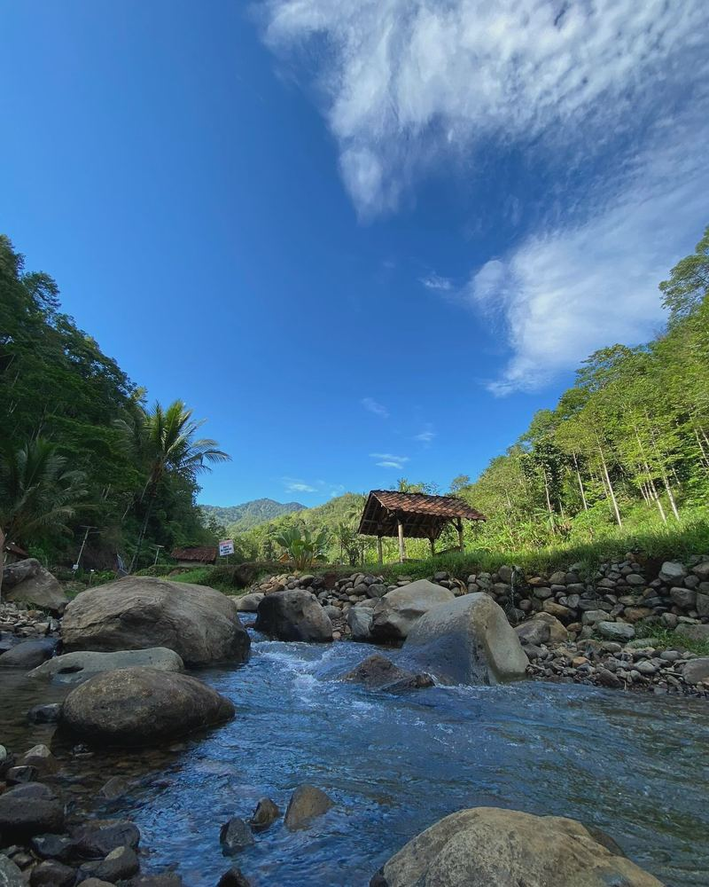
Ulasan tamu
“Sungainya jernih dan bersih, serta cukup aman utk anak2 bermain atau berenang. Makanan juga enak enak, harga cukup kompetitif.
“Penginapannya estetik, nuansa perkampungannya dapat, nuansanya menenangkan, sejuk dan asri. Pelayanannya juga sangat ramah.
“Lokasinya pinggir sungai dan sawah, enak buat nyantai bersama keluarga.
Citengah · Sumedang Selatan
Citengah, Sumedang Selatan, Sumedang Regency, West Java 45311. Mobil parkir di depan, di luar area (bayar ke desa), lalu jalan kaki ke saung.
Buka di MapsSebelum berangkat
Check-in jam 14.00, check-out jam 12.00.
Nggak. Tiket masuk Rp5.000 weekday dan Rp10.000 weekend cuma buat yang datang tanpa nginep. Tamu nginep gratis.
Mobil parkir di depan, di luar area kami, bayarnya ke desa. Dari parkir jalan kaki ke saung.
Chat WA 0821-2625-9506, sebut saung, tanggal, dan jumlah orang. Tanggal terkunci setelah DP 50%, sisanya dibayar waktu check-in. Pesan makanan juga DP 50%.
Bisa. Area wisata buka 08.00–16.00, bayar tiket masuk, main di sungai, makan liwet di saung.
Rp75.000 per extra bed. Tiap saung ada batas maksimalnya, lihat di daftar saung.
Booking lewat WhatsApp
Chat kami di WA, kabarin tanggal dan jumlah orangnya, kami cek saung mana yang masih kosong.
0821-2625-9506